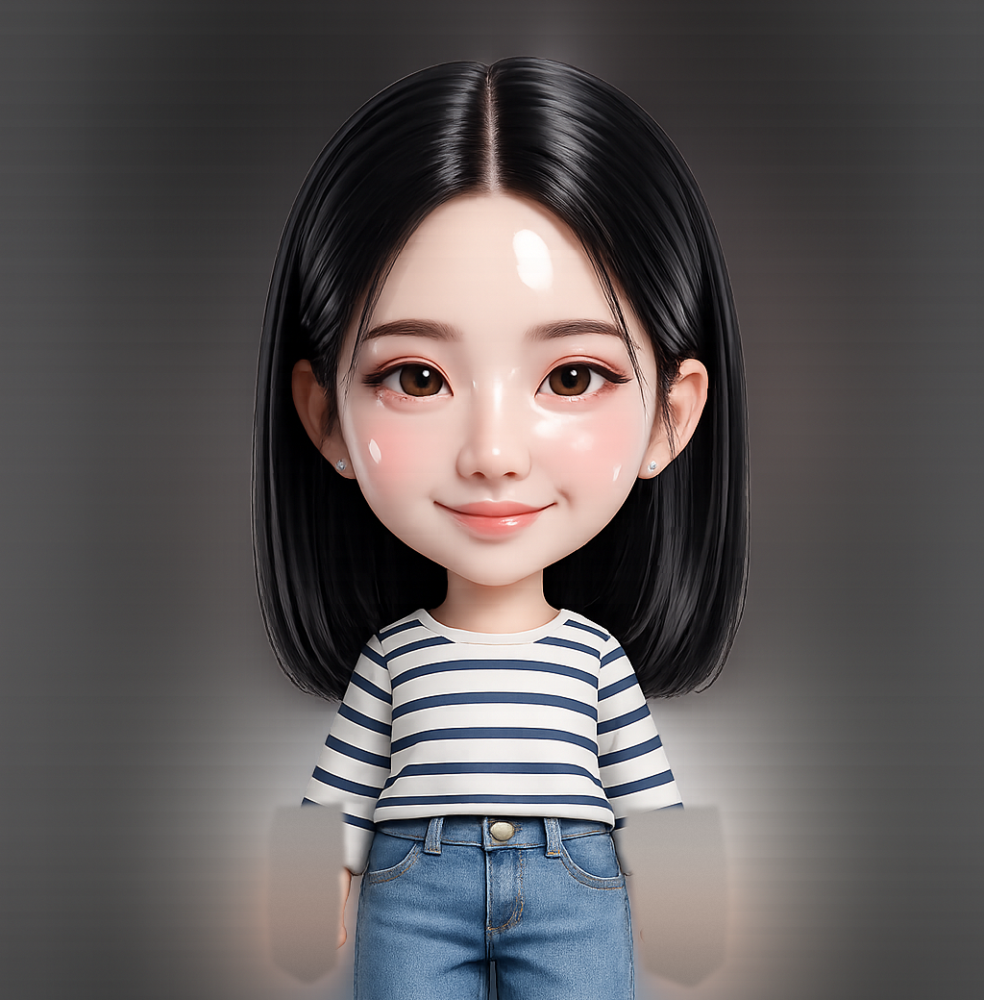
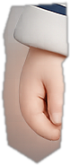
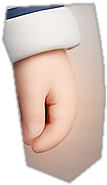

AI Experiment · Side Project · Jul 2026 — Vibe Coding
HOMUSCLE : AI 홈트레이닝 트래커 웹앱 카메라 포즈 인식으로 덤벨 운동 횟수를 자동으로 세는 웹앱 — 디자인 시스템 정의부터 구현·검증까지
Overview
왜 만들었나
집에서 덤벨 운동을 할 때 횟수를 세는 일이 생각보다 번거롭습니다. 세다가 놓치면 기록이 남지 않고, 기록이 없으면 운동을 이어가기 어려웠습니다. 직접 겪은 이 문제를 카메라 포즈 인식으로 해결할 수 있을지 확인해보기 위해 시작한 개인 프로젝트입니다.
HOMUSCLE은 웹캠 앞에서 운동하면 팔꿈치 각도를 실시간으로 추적해 횟수를 자동으로 세고 기록하는 웹앱입니다. 설치나 서버, 계정 없이 HTML 파일 하나로 동작합니다. 기획과 디자인 시스템, 모션, 카피를 정의하고 AI(Claude)와 함께 구현까지 진행했습니다.
Design System
디자인 시스템 정의
프리미엄 스포츠 브랜드의 공간 경험을 레퍼런스로 삼아, 블랙 배경에 주황(#FF6B00) 단일 액센트만 사용하는 규칙을 정했습니다. 색이 하나뿐이므로 위계는 타이포그래피와 여백으로 만들었습니다. 운동명은 4~5rem 올캡스, 레이블은 0.72rem 올캡스에 넓은 자간, 카운터는 7rem 주황으로 정리했고, 주황은 강조가 필요한 요소에만 제한적으로 사용했습니다.
모든 색은 CSS 변수 토큰으로만 쓰도록 규칙화해, 화면이 늘어나도 시스템이 일관되게 유지되도록 했습니다.
COLOR TOKENS
TYPE SCALE
BUTTONS — hover 해보세요
Key Screens
주요 화면
아래 화면은 캡처가 아니라 실제 앱을 그대로 임베드한 것입니다. 상단 탭으로 화면을 이동하거나 목표를 추가해볼 수 있습니다.
01 · Training — 목표와 진행 상황
모토·스트릭·통계·목표 카드를 한 화면에 배치했습니다. D-day 숫자를 주황으로 크게 배치해 오늘 운동해야 하는 이유가 가장 먼저 보이도록 했습니다. 목표를 달성한 날에도 '계속 하기'로 재운동할 수 있게 해, 달성 뱃지가 운동을 멈추는 이유가 되지 않도록 했습니다.
02 · Gallery — 운동 기록
달력에서 운동한 날은 주황 도트로, 인증샷이 있는 날은 썸네일로 표시됩니다. 날짜를 클릭하면 그날의 세션이 우측 패널에 나타나고, 기록 카드를 누르면 상세 모달이 열립니다. 기록을 다시 확인하고 싶게 만드는 것을 리텐션 설계의 목표로 잡았습니다.
03 · Stretch — 스트레칭 가이드
목·어깨 스트레칭 가이드는 영상 대신 SVG 와이어프레임 애니메이션으로 제작했습니다. 관절 회전축과 동작 궤적을 코드로 그리면 용량 부담이 거의 없고, 블랙·주황 톤을 그대로 유지할 수 있습니다. 같은 방식의 애니메이션을 운동 시작 전 가이드 팝업에도 사용했습니다.
Session
세션 화면 설계
세션 화면은 제약이 분명했습니다. 사용자는 화면에서 2~3m 떨어져 있고, 두 손에는 덤벨이 들려 있습니다. 그래서 풀스크린 카메라 위에 최소한의 정보만 배치했습니다. 멀리서도 읽히도록 카운터를 7rem 주황으로 키우고, 풀와이드 진행 바와 포즈 스켈레톤 오버레이를 더했습니다. 모든 조작은 세션 전후로 옮겼고, 세션 중 피드백은 시각(펄스)과 청각(사운드)으로 이중화했습니다.
아래는 세션 화면의 구조를 재현한 목업입니다 — 실제 세션은 카메라 권한이 필요해 라이브 앱 ↗에서 체험할 수 있습니다.



세션 화면 재현 목업 — 실제 사용 시 상반신이 프레임에 가득 잡히고, 카메라 피드 위에 포즈 스켈레톤·팔꿈치 각도·아령 인식 박스가 실시간으로 그려집니다
카운팅 상태머신
초기에는 팔을 50° 이하로 완전히 굽혀야 카운트됐습니다. 직접 운동해보니 자세의 정확도보다 카운트가 안 되는 경험이 이탈 요인이었습니다. 임계값을 80°/110°로 완화하고, 노이즈로 인한 오카운트는 프레임 안정화와 디바운스로 막았습니다.
> 110°2프레임 연속 유지 시 상태 확정
< 80°DOWN→UP 전환 시 +1 카운트
300ms반동·떨림에 의한 중복 카운트 차단
쓰다가 멈췄던 지점
기능이 되는 것보다 안 될 때 이유를 알 수 있는가가 이 도구를 계속 쓰게 만드는 조건이었습니다. 실제로 세션이 멈췄던 세 지점입니다.
아령 인식 모델이 로드되지 않자 카운트가 아예 올라가지 않았습니다
아령 박스 렌더링과 포즈 기반 카운팅을 분리했습니다. 모델이 없으면 박스만 생략되고 세션은 끝까지 진행됩니다.
프레임 밖으로 나가면 화면은 그대로인데 숫자만 멈췄습니다
포즈가 잡히지 않는 동안 '카메라 앞에 서주세요' 오버레이를 띄웁니다. 사용자가 자기 자세를 의심하기 전에 원인을 먼저 보여주기 위해서입니다.
저장 공간이 차자 세션 기록 자체가 남지 않았습니다
용량이 부족하면 인증샷을 먼저 버리고 운동 기록은 남기도록 우선순위를 뒀습니다. 사진보다 연속 기록이 끊기는 쪽이 더 큰 손실이었습니다.
Feedback & Motivation
화면을 볼 수 없는 사용자를 위한 피드백
카운트는 정확해졌는데 계속 쓰게 되지는 않았습니다. 이유는 단순했습니다 — 덤벨을 들고 있으면 화면을 볼 수가 없습니다. 시선은 위나 아래를 향하고, 숫자가 올라갔는지는 세트가 끝나고서야 확인하게 됩니다. 그래서 피드백을 화면 밖으로 꺼냈습니다.
소리와 손목 펄스
카운트마다 짧은 사운드가 울리고 손목 주변에 주황 펄스가 번집니다. 화면을 보지 않아도 세어졌다는 걸 알 수 있습니다. 결국 나를 세트 끝까지 가게 만든 건 이 하나였습니다.
자세 가이드
세션에 들어가면 모션 가이드를 먼저 띄웁니다. 카운트가 안 되는 상황을 나중에 안내하기보다, 그런 자세로 시작하는 것 자체를 줄이는 편이 나았습니다.
인증샷과 D-day
완료 직후 3-2-1 카운트다운으로 자동 촬영해 기록에 붙이고, 다음 날 D-day와 연속 기록을 띄웁니다. 오늘을 끝내는 장치라기보다 내일 다시 열 이유를 만드는 쪽에 가깝습니다.
컨페티나 격려 문구처럼 눈에 보이는 장치도 넣었지만, 실제로 차이를 만든 건 화면을 보지 않아도 전달되는 신호였습니다.
Process — Working with AI
기준을 문서로 쓰기 전과 후
처음에는 만들고 싶은 걸 그때그때 설명했습니다. 동작하는 화면은 빠르게 나왔지만, 요청 한 번에 카드 모서리가 둥글어지고 주황색이 배경까지 번졌습니다. 같은 지적을 세 번쯤 반복하고 나서야 문제를 알았습니다. AI가 기준을 어긴 게 아니라, 기준이 어디에도 적혀 있지 않았습니다.
기준 없이 요청할 때
"카드 좀 더 깔끔하게" — 매번 다른 결과가 나오고, 마음에 안 들면 처음부터 다시 설명해야 했습니다.
기준을 문서로 고정한 뒤
"radius 4px, 주황은 강조점에만" — 대화를 새로 시작해도 같은 결과가 나왔습니다.
이후 디자인 토큰, 레이아웃 규칙, 카운팅 임계값, 그리고 무엇이 완성인지를 판단할 체크리스트를 문서 하나에 모으고 모든 작업의 기준으로 삼았습니다. 프롬프트를 잘 쓰는 것보다 완성의 정의를 먼저 내리는 일이 결과물을 좌우했습니다.
### 레이아웃 규칙 - 카드 border-radius: 4px (날카롭게) - 주황(#ff6b00)은 강조점에만 — 면적으로 쓰지 않음 ### 카운팅 민감도 ANGLE_UP = 80° / ANGLE_DOWN = 110° ### 완성 기준 - [ ] 모델 로드 실패해도 카운팅은 동작한다 - [ ] 포즈 미검출 시 원인을 화면에 말해준다 - [ ] 카운트는 화면을 보지 않아도 인지된다
완성 기준은 기능 목록이 아니라 사용자가 무엇을 알 수 있어야 하는가로 적었습니다
Reflection
배운 것과 다음 단계
알고 있는 한계
검증 범위
본인 사용 기반 튜닝 단계로, 타 사용자 대상 사용성 테스트는 아직 진행 전입니다.
환경 민감도
조명·카메라 각도에 따라 포즈 인식 편차가 있어 측면 운동 종목은 인식률이 낮아집니다.
모바일 경험
데스크톱 웹캠 시나리오 우선으로 설계해 모바일 세션 UI는 최적화가 필요합니다.
단일 파일이라는 선택
링크 하나로 바로 열리게 하려고 HTML 한 파일로 유지했습니다. 대신 종목을 늘리는 시점에는 구조를 분리해야 합니다.
다음에 할 것
아직은 혼자 쓰면서 맞춘 상태입니다. 다음에는 5명 정도에게 직접 써보게 해서 카운팅을 믿을 수 있는지, 첫 세션에서 어디가 막히는지를 확인해보고 싶습니다. 운동 종목은 무릎 각도를 쓰는 스쿼트·런지로 넓힐 수 있고, 모바일 세로 화면 최적화는 그다음 순서로 보고 있습니다.
다른 케이스

프로덕트 디자인 · Naver OGQ Market · 2026
네이버 OGQ마켓 홈 상단 노출 구조 개선
케이스 스터디 보기 →
YouTube 리디자인 챌린지 · 2025